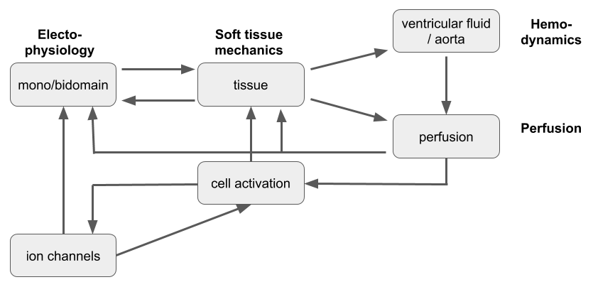

Design specification¶
This page outlines the design specification that M3H3 is built against and gives an overiew of the intended structure and functionality of the program.
Physiological basis¶
Historically, the physiology of the heart has mostly been studied in separation to resolve specific questions related to either electrophysiology, soft tissue mechanics or hemodynamics. However, in reality, the different branches of physics that involved in the functioning of the heart in health as well as disease, are highly interconnected, both across spatial and time scales.
Some of these interactions have a larger influence on other interactions than others. We will refer to these as "forward" interactions, while the exact definition of a "forward interaction" remains to be decided on.
Software design¶
Parts of the problem have been tackled before, and we have the following FEniCS based software available:
fenics-geometry: based on Henrik's pulse.geometry (https://github.com/ComputationalPhysiology/pulse), extended to handle arbitrary geometries.
cbcbeat: mono- and bidomain module of electrophysiology, including cell ODE models.
pulse: cardiac specific solid mechanics module.
oasis: hemodynamics specific Navier-Stokes module.
perspect: perfusion module.
M3H3 specifically does not aim at reinventing the wheel, and therefore it will be a wrapper module in the first instance.
Architecture¶
from dolfin import *
from geometry import *
class M3H3(object)
class Problem(object)
class ElectroProblem(Problem): import cbcbeat
class SolidProblem(Problem): import pulse
class FluidProblem(Problem): import oasis
class PorousProblem(Problem): import perspect
class Interaction(object)
class Solver(object)
class ElectroSolver(Solver): import cbcbeat
class SolidSolver(Solver): import pulse
class FluidSolver(Solver): import oasis
class PorousSolver(Solver): import perspect
User interface¶
M3H3's "hello world" will consist of setting up an simulation of electrophysiology driven contraction:
import m3h3
from geometry import *
# Load a heart mesh including markers and marker functions
# from file
geo = HeartGeometry.load_from_file(‘heart_mesh.h5’)
# By instantiating parameters of a certain physics module we
# tell m3h3 which physics to involve in the simulation. In
# this case we are only interested in simulating EP and soft
# tissue dyamics at the continuum level.
electro_params = m3h3.set_electro_default_parameters()
solid_params = m3h3.set_solid_default_parameters()
# The user specifies the interactions included in the
# simulation by instantiating Interaction objects
ep2solid = m3h3.Interaction(Physics.ELECTRO, Physics.SOLID)
# Once all physics and interactions are defined we can
# instantiate the M3H3 object. The M3H3 object infers from
# the ´set_physics_default_parameters´ functions that have
# been called, which physics the user would like to run.
m3h3 = M3H3(geo, interactions=[ep2solid])
# Loop over time
for t in time:
# do some preprocessing
m2h2.step()
# do some postprocessing, for example saving to file
Parameters¶
Parameters are handled through dolfin's Parameter class. The module setup_parameters.py instantiates a dolfin.Parameters object at runtime:
parameters = dolfin.Parameters("M3H3")
that is accessible from within m3h3:
import m3h3
params = m3h3.parameters
The module setup_parameters.py also contains methods to set up default physics parameters that can be called by the user and return their respective dolfin.Parameters object:
electro_params = m3h3.set_electro_default_parameters()
solid_params = m3h3.set_solid_default_parameters()
fluid_params = m3h3.set_fluid_default_parameters()
porous_params = m3h3.set_porous_default_parameters()
M3H3 infers from the instantiated physics parameter objects which physics the user would like to run in their simulation.
Physics Enumerator¶
M3H3 contains a Python enumerator object Physics, which contains placeholders for the physics labels used by M3H3. These are currently
Physics.ELECTRO: electrodynamics
Physics.SOLID: solid mechanics
Physics.FLUID: fluid dynamics
Physics.POROUS: porous mechanics